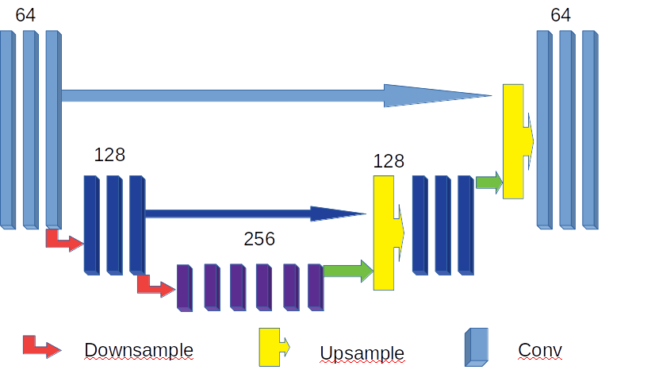

Build your network!¶
What is UNet?¶
In this part, I will try to elaborate what is UNet and how it works. Before UNet, I will begin with two other neural networks, autoencoder and ResNet, which have similar network structure to parts of UNet. In fact, these two helped me a lot to understand UNet, and hence I hope it will help you too. You can also skip these to go directly to UNet below if you know them already.
Autoencoder¶
As stated in Wiki, autoencoder is a network which learns to compress data from the input layer into a short code and then uncompress that code into something that closely matches the origin data. The schematic structure of an autoencoder with 3 fully connected hidden layer is shown below.

In other words, the autoencoder is trying to learn an approximation to the identity function, so as to output \(\hat{x}\) is similar to input \(x\), such that
From one point, the autoencoder often ends up learning a low-dimension representation very similar to PCAs when the number of hidden units in the middle of autoencoder is small. The autoencoder is useful for tasks such as object recognition and other vision tasks.
class AutoEncoder(nn.Module):
def __init__(self):
super(AutoEncoder, self).__init__()
self.encoder = nn.Sequential(
nn.Linear(256, 128),
nn.Tanh(),
nn.Linear(128, 64),
nn.Tanh(),
nn.Linear(64, 12),
nn.Tanh(),
nn.Linear(12, 3), # compress to 3 features which can be visualized in plt
)
self.decoder = nn.Sequential(
nn.Linear(3, 12),
nn.Tanh(),
nn.Linear(12, 64),
nn.Tanh(),
nn.Linear(64, 128),
nn.Tanh(),
nn.Linear(128, 256),
nn.Sigmoid(), # compress to a range (0, 1)
)
def forward(self, x):
encoded = self.encoder(x)
decoded = self.decoder(encoded)
return encoded, decoded
ResNet¶
The residual neural network (ResNet) is an artificial neural network (ANN) of a kind that builds on constructs known from pyramidal cells in the cerebral cortex. Residual neural networks do this by utilizing skip connections, or short-cuts to jump over some layers. And the reason for the skipping or short-cuts is to avoid the problem of vanishing gradients by reusing the values from previous layers. The structure of ResNet is shown below.
{kind=link}
From my view, the ResNet also keep the previous learned features and in this way, it is good to work with tasks such as image denoising/impainting. Moreover, the simulations turn out that the short-cuts layers are functional to refine the image if they are added at the end of the network. For example, I have tried to add five convoluted res layer at the end and it did improve the quality of the image little.
class BasicBlock(nn.Module):
expansion = 1
def __init__(self, inplanes, planes, stride=1, downsample=None):
super(BasicBlock, self).__init__()
self.conv1 = conv3x3(inplanes, planes, stride)
self.bn1 = nn.BatchNorm2d(planes)
self.relu = nn.ReLU(inplace=True)
self.conv2 = conv3x3(planes, planes)
self.bn2 = nn.BatchNorm2d(planes)
self.downsample = downsample
self.stride = stride
def forward(self, x):
residual = x
out = self.conv1(x)
out = self.bn1(out)
out = self.relu(out)
out = self.conv2(out)
out = self.bn2(out)
if self.downsample is not None:
residual = self.downsample(x)
out += residual
out = self.relu(out)
return out
class Bottleneck(nn.Module):
expansion = 4
def __init__(self, inplanes, planes, stride=1, downsample=None):
super(Bottleneck, self).__init__()
self.conv1 = nn.Conv2d(inplanes, planes, kernel_size=1, bias=False)
self.bn1 = nn.BatchNorm2d(planes)
self.conv2 = nn.Conv2d(planes, planes, kernel_size=3, stride=stride,
padding=1, bias=False)
self.bn2 = nn.BatchNorm2d(planes)
self.conv3 = nn.Conv2d(planes, planes * 4, kernel_size=1, bias=False)
self.bn3 = nn.BatchNorm2d(planes * 4)
self.relu = nn.ReLU(inplace=True)
self.downsample = downsample
self.stride = stride
def forward(self, x):
residual = x
out = self.conv1(x)
out = self.bn1(out)
out = self.relu(out)
out = self.conv2(out)
out = self.bn2(out)
out = self.relu(out)
out = self.conv3(out)
out = self.bn3(out)
if self.downsample is not None:
residual = self.downsample(x)
out += residual
out = self.relu(out)
return out
class ResNet(nn.Module):
def __init__(self, block, layers, num_classes=1000):
self.inplanes = 64
super(ResNet, self).__init__()
self.conv1 = nn.Conv2d(3, 64, kernel_size=7, stride=2, padding=3,
bias=False)
self.bn1 = nn.BatchNorm2d(64)
self.relu = nn.ReLU(inplace=True)
self.maxpool = nn.MaxPool2d(kernel_size=3, stride=2, padding=1)
self.layer1 = self._make_layer(block, 64, layers[0])
self.layer2 = self._make_layer(block, 128, layers[1], stride=2)
self.layer3 = self._make_layer(block, 256, layers[2], stride=2)
self.layer4 = self._make_layer(block, 512, layers[3], stride=2)
self.avgpool = nn.AvgPool2d(7, stride=1)
self.fc = nn.Linear(512 * block.expansion, num_classes)
for m in self.modules():
if isinstance(m, nn.Conv2d):
n = m.kernel_size[0] * m.kernel_size[1] * m.out_channels
m.weight.data.normal_(0, math.sqrt(2. / n))
elif isinstance(m, nn.BatchNorm2d):
m.weight.data.fill_(1)
m.bias.data.zero_()
def _make_layer(self, block, planes, blocks, stride=1):
downsample = None
if stride != 1 or self.inplanes != planes * block.expansion:
downsample = nn.Sequential(
nn.Conv2d(self.inplanes, planes * block.expansion,
kernel_size=1, stride=stride, bias=False),
nn.BatchNorm2d(planes * block.expansion),
)
layers = []
layers.append(block(self.inplanes, planes, stride, downsample))
self.inplanes = planes * block.expansion
for i in range(1, blocks):
layers.append(block(self.inplanes, planes))
return nn.Sequential(*layers)
def forward(self, x):
x = self.conv1(x)
x = self.bn1(x)
x = self.relu(x)
x = self.maxpool(x)
x = self.layer1(x)
x = self.layer2(x)
x = self.layer3(x)
x = self.layer4(x)
x = self.avgpool(x)
x = x.view(x.size(0), -1)
x = self.fc(x)
return x
The above code is from Pytorch Vision https://pytorch.org/docs/0.4.0/_modules/torchvision/models/resnet.html .
UNet¶
Finally, we will go into UNet. Facts: U-Net was created by Olaf Ronneberger, Philipp Fischer, Thomas Brox in 2015 at the paper “UNet: Convolutional Networks for Biomedical Image Segmentation”. And until May 2019, it has been cited almost 6000, which shows little about how fast the development of deep learning.
The network(UNet) consists of a contracting path and an symmetric expansive path, which gives it the u-shaped architecture. The contracting path is a typical convolutional network that consists of repeated application of convolutions, each followed by a rectified linear unit (ReLU) and a max pooling operation. During the contraction, the spatial information is reduced while feature information is increased. The expansive pathway combines the feature and spatial information through a sequence of up-convolutions and concatenations with high-resolution features from the contracting path.
From my view, the spatial information inherts the idea from the autoencoder while the difference is that it transfer the information into the feature spaces. While the concatenations of feature and spatial information is somehow inherts from ResNet while the difference is that it is not just short-cuts since it combines the spatial and feature information.
One example of UNet with two times- subsampling is elaborated below.
{kind=link}
In our case, if we are doing image denoising/impainting. The UNet will encode the corrupted image into a lower dimensional space consisting of the essential features and decodes the essential features to the uncorrupted version, while UNet further combines spatial and feature information between the encoding and decoding sides of the network. These direct connections propagate feature representation to the decoder at each level and provide a shortcut for backpropagation.
How to write UNet in code?¶
The example code based on UNet in Pytorch is given below[for more details please refer to the code or the paper of UNet].
Structure of UNet¶
In the following code, the structure of UNet is given based on 3 downsamplings and 3 upsamplings, where 3 downsamplings are included in the Encoder network and 3 upsampling are included in the Decoder network. Five fully convoluted layers are added as the bottom layer of the network and two fully convoluted layers are added to the end of the network to further refine the output[improve the quality of the image].
Note
The number of up/down samplings can be selected as the parameters while tuning the network. It is worthy to try and explore.
And the dimentions of output also depend on the size of kernels/padding/dilation/input, and hence please be sure about the output based on different inputs.
In general, the dimensions of the output can be calculated as following, if we use
torch.nn.Conv2d.\[d_{out} = \frac{d_{in} + 2*pad - dilation *(kernelsize -1) - 1}{stride} +1\]where \(d_{out}\) is the dimension of output and \(d_{in}\) is the dimension of input.
And when it goes to the concatenation, we use
torch.nn.ConvTranspose2d\[d_{out} = (d_{in}-1)*stide - 2*pad + dilation *(kernelsize -1) + outpad +1\]
class UNet(torch.nn.Module):
def __init__(self, opts):
super(UNet, self).__init__()
self.opts = opts
input_channel_number = 5
output_channel_number = 1
kernel_size = 3
# Encoder network
self.down_block1 = UNet_down_block(input_channel_number, 64, False) # 64*520
self.down_block2 = UNet_down_block(64, 128, True) # 64*520
self.down_block3 = UNet_down_block(128, 256, True) # 64*260
# bottom convolution
self.mid_conv1 = torch.nn.Conv2d(256, 256, kernel_size, padding=(1, 1), bias=False)# 64*260
self.bn1 = Norm(256)
self.mid_conv2 = torch.nn.Conv2d(256, 256, kernel_size, padding=(1, 1), bias=False)# 64*260
self.bn2 = Norm(256)
self.mid_conv3 = torch.nn.Conv2d(256, 256, kernel_size, padding=(1, 1), bias=False) #, dilation=4 # 64*260
self.bn3 = Norm(256)
self.mid_conv4 = torch.nn.Conv2d(256, 256, kernel_size, padding=(1, 1), bias=False)# 64*260
self.bn4 = Norm(256)
self.mid_conv5 = torch.nn.Conv2d(256, 256, kernel_size, padding=(1, 1), bias=False)# 64*260
self.bn5 = Norm(256)
# Decoder network
self.up_block2 = UNet_up_block(128, 256, 128, 1)# 64*520
self.up_block3 = UNet_up_block(64, 128, 64, 1)# 64*520
# # Final output
self.last_conv1 = torch.nn.Conv2d(64, 64, 3, padding=(1, 1), bias=False)# 64*520
self.last_bn = Norm(64) #
self.last_conv2 = torch.nn.Conv2d(64, output_channel_number, 3, padding=(1, 1))# 64*520
self.last_bn2 = Norm(output_channel_number) # 64*520
self.softplus = torch.nn.Softplus(beta=5)
self.relu = torch.nn.ReLU()
self.tanhshrink = torch.nn.Tanhshrink()
self.tanh = torch.nn.Tanh()
def forward(self, x, test=False):
x1 = self.down_block1(x)
x2 = self.down_block2(x1)
x3 = self.down_block3(x2)
x4 = torch.nn.functional.leaky_relu(self.bn1(self.mid_conv1(x3)), 0.2)
x4 = torch.nn.functional.leaky_relu(self.bn2(self.mid_conv2(x4)), 0.2)
x4 = torch.nn.functional.leaky_relu(self.bn3(self.mid_conv3(x4)), 0.2)
x4 = torch.nn.functional.leaky_relu(self.bn4(self.mid_conv4(x4)), 0.2)
x4 = torch.nn.functional.leaky_relu(self.bn5(self.mid_conv5(x4)), 0.2)
out = self.up_block2(x2, x4)
out = self.up_block3(x1, out)
out = torch.nn.functional.relu(self.last_conv1(out))
out = self.last_conv2(out)
out = self.softplus(out)
return out
Details of Code¶
The upblock and downblock are defined as following:
class UNet_down_block(torch.nn.Module):
def __init__(self, input_channel, output_channel, down_sample):
super(UNet_down_block, self).__init__()
kernel_size = 3
self.conv1 = torch.nn.Conv2d(input_channel, output_channel, kernel_size, stride=(1, 1), padding=(1, 1), bias=False)
self.bn1 = Norm(output_channel)
self.conv2 = torch.nn.Conv2d(output_channel, output_channel, kernel_size, stride=(1, 1), padding=(1, 1), bias=False)
self.bn2 = Norm(output_channel)
self.conv3 = torch.nn.Conv2d(output_channel, output_channel, kernel_size, stride=(1, 1), padding=(1, 1), bias=False)
self.bn3 = Norm(output_channel)
self.down_sampling = torch.nn.Conv2d(input_channel, input_channel, kernel_size, stride=(2, 2), padding=(1, 1), bias=False)
self.down_sample = down_sample
def forward(self, x):
if self.down_sample:
x = self.down_sampling(x)
# print('down',x.shape)
x = torch.nn.functional.leaky_relu(self.bn1((self.conv1(x))), 0.2)
x = torch.nn.functional.leaky_relu(self.bn2((self.conv2(x))), 0.2)
x = torch.nn.functional.leaky_relu(self.bn3((self.conv3(x))), 0.2)
# print(x.shape)
return x
class UNet_up_block(torch.nn.Module):
def __init__(self, prev_channel, input_channel, output_channel, ID):
super(UNet_up_block, self).__init__()
kernel_size = 3
self.ID = ID
self.up_sampling = torch.nn.ConvTranspose2d(input_channel, input_channel, 4, stride=(2, 2), padding=(1, 1))
self.conv1 = torch.nn.Conv2d(prev_channel + input_channel, output_channel, kernel_size, stride=(1, 1), padding=(1, 1), bias= False)
self.bn1 = Norm(output_channel)
self.conv2 = torch.nn.Conv2d(output_channel, output_channel, kernel_size, stride=(1, 1), padding=(1, 1), bias= False)
self.bn2 = Norm(output_channel)
self.conv3 = torch.nn.Conv2d(output_channel, output_channel, kernel_size, stride=(1, 1), padding=(1, 1), bias= False)
self.bn3 = Norm(output_channel)
def forward(self, prev_feature_map, x):
if self.ID == 1:
x = self.up_sampling(x)
elif self.ID == 2:
x = torch.nn.functional.interpolate(x, scale_factor=(2, 2), mode='nearest')
elif self.ID == 3:
x = torch.nn.functional.interpolate(x, scale_factor=(2, 2), mode='area') #‘nearest’ | ‘linear’ | ‘bilinear’ | ‘trilinear’ | ‘area’
x = torch.cat((x, prev_feature_map), dim=1)
# x = torch.nn.functional.leaky_relu(self.bn1((self.conv1(x))), 0.2)
# x = torch.nn.functional.leaky_relu(self.bn2((self.conv2(x))), 0.2)
# x = torch.nn.functional.leaky_relu(self.bn3((self.conv3(x))), 0.2)
# print('up', x.shape)
x = torch.nn.functional.leaky_relu((self.conv1(x)), 0.2)
x = torch.nn.functional.leaky_relu((self.conv2(x)), 0.2)
x = torch.nn.functional.leaky_relu((self.conv3(x)), 0.2)
# print(x.shape)
return x
Knowing the network, we can input the corrupted image, train the network, and output the cleaned image. Also note that the contracting path in UNet can be implemented based on differet kernels, say 3*3, 4*4 or 5*5.
Note
Plus, we just give the example of UNet while there are plenties of networks worthy to explore and try, such as VGG, ResNet, FrameletNet. Just google it, and you will find something worthy to try.